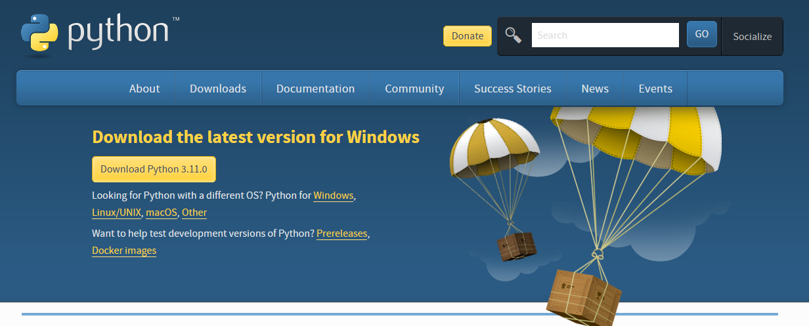
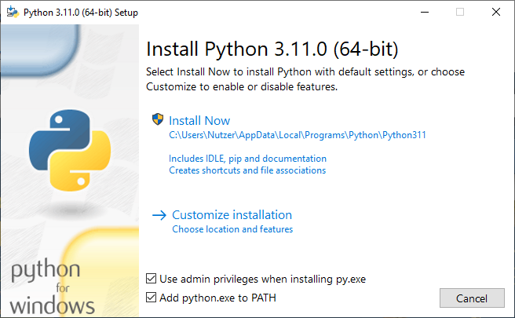
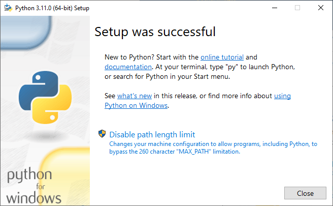
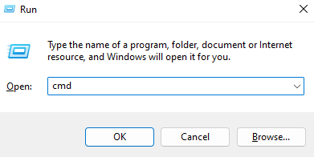
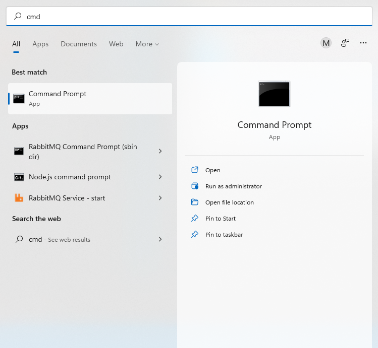

Chapter 1. Fundamentals#
Programming Languages#
A program is a sequence of instructions for a computer to execute. For example, Adobe Photoshop is a program, as is Microsoft Paint. Even though these two programs are of different quality, they both contain sequences of instructions like “add these two numbers”, “draw a line”, “recognize this face” which are then executed by your computer.
A program is generally in a programming language. A programming language is usually very different from a natural language like English. If I say something like “Python is awesome programming language”, then despite the fact that there is a grammar error (did you notice the missing article?) you are still able to understand me.
With computers, the picture is very different. We need to be very precise when “speaking in” a programming language. A missing character can make the difference between a perfectly working program and a total disaster.
One of the most popular and beginner-friendly languages is Python. This book will introduce you to the most important concepts of Python and teach you how to create working software. Note that the goal isn’t to introduce you to every single Python feature in existence (which is impossible in a single book). Most of these features will not be terribly important at the beginning of your software developer career anyway. Instead, we will teach you the most important practical concepts that you need to write code that won’t make your fellow developers cry and weep.
However, this is also not a book that just teaches you if statements, for loops and functions and leaves it at that. We will dive into certain topics that are often left out of beginner books, but are extremely important in the real world like the dreaded encodings or how to work with third-party packages.
Installing a Python Runtime#
Python is a great programming language. But even the best programming language is useless, without a runtime environment (or just runtime for short) to execute it. Some languages can use a runtime that is already present on your operating system. However, Python requires a special runtime which we will download now.
The installation instructions below assume that you are on Windows. If you use macOS or a Linux distribution, you can consult the appropriate guides.
There are multiple runtimes for Python, the most popular one being CPython. Go to https://www.python.org/downloads/ to grab it:

Click the “Download” button to download the runtime installer.
Note that by the time you are reading this book, the displayed Python version might be different. The precise version doesn’t really matter for our purposes. The only caveat is that you should only use Python 3 and not Python 2. Python 2 has been sunset and should therefore never be used for new projects.
The download will give you an exe (executable) file. If you start the exe file, you will see the following screen:

Note that it’s important that the “Add python.exe to PATH” checkbox is checked. If it is not, you need to check it yourself. This is necessary so that Python will be found on your system later on when we execute commands.
After the installation is done, you should see the following:

You can open a command line on our computer to execute the Python interpreter which will allow us to write and execute Python programs.
On Windows, you can open the command line by opening the “Run” window using Win + R, typing cmd and pressing the “Ok” button:

Alternatively you can type “cmd” into the search field. An app called “command prompt” should show up. Simply click the app and a CLI should open:

Next we type python in the command line to open a Python REPL (short for Read, Eval, Print, Loop) which allows you to interact with the Python interpreter.
Inside the Python Runtime#
The two most important programming constructs are statements and expressions. A statement tells the runtime to execute an action. An expression is something that can be evaluated to a value.
Let us type the following statement in the REPL we just opened and hit Return (Enter):
print("Hello, World!")
Hello, World!
As you can see, this statement tells the runtime to display "Hello, World!".
Note that "Hello, World!" is a special expression called a literal, which is a way to represent a fixed value in your code.
Congratulations! You just executed your first Python statement from the REPL! Whenever you wish to execute a statement in the REPL, you need to type the statement and then hit Return (Enter).
We should note that we can also just write an expression in the REPL. Try simply typing "Hello, World!":
"Hello, World!"
'Hello, World!'
Note that there is a subtle difference between outputting a value with print versus just writing the value in the REPL. The print outputs the a user-readable value. However if we just write the value in the REPL, we get an unambiguous representation of that value. We can actually already see the difference. If you look closely, you can see that print("Hello, World!") outputs Hello, World!, whereas just writing "Hello, World!" outputs 'Hello, World!' (note the single quotes).
Scripts#
Executing statements from the REPL is all fine and dandy for learning. However we can’t really instruct our users to write statements in the REPL to execute our programs.
Therefore Python allows us to write scripts, which are files that contain Python code. These files can then be executed. Executing a file will simply execute all statements in that file.
Let us create a file named hello.py and add the statement print("Hello, World!") to that file. The content of your file should therefore look like this:
print("Hello, World!")
Now, execute the following from a command line:
python hello.py
This should again print Hello, World!.
If you are executing code from a script and you want to output values, you will always need to print them. Just writing the values down won’t work. For example, try creating a file hello2.py with the following content:
"Hello, World!"
Now execute the file using the command line:
python hello2.py
As you can see, nothing happens.
This is important to remember - if you wish to show output when executing a file, you will need to use print, you can’t just write down an expression. This is different from a REPL where you can just write down an expression and the REPL will show the resulting value.
Style Guide#
As long as the code you write is syntactically valid, you can technically write Python code however you want. For example this is another way to output "Hello, World!":
print ( "Hello, World!" )
Hello, World!
However, this looks really ugly. Writing software means that you will be reading a lot of code. If that code isn’t properly formatted it’s harder to understand, harder to maintain and just straight up annoying. Luckily for us, the creators of Python have outlined a style guide in Python Enhancement Proposal #8 (PEP8 for short). Python programmers are strongly encouraged to follow this style guide.
By strongly encouraged we mean that if you don’t follow PEP8 a horde of Python programmers will hunt you down and force you to write COBOL. You don’t want to write COBOL.
Because we want you to follow best practices (and not be hunted down by a horde of Python programmers), we will occasionally add a note that looks like this:
PEP8 note: The flunkie should be formatted in such a way, that the flunkifier is flunkified.
We will keep this to a minimum, since there are tools that can help us automate the formatting process. Nevertheless you should know that PEP8 exists, that you should adhere to it and keep a few very basic PEP8 rules in mind.
Comments#
If you want to write a statement that should be ignored by the interpreter, you can use comments. Python uses a special symbol
#to denote such a comment:# I am a comment!Comments are generally used to document and explain what a particular piece of code is doing, enhancing readability and maintainability.